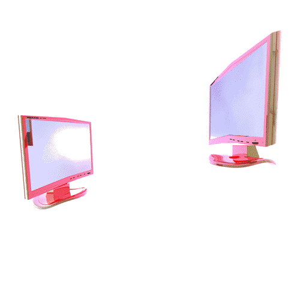
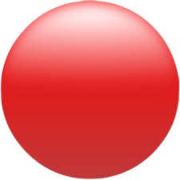

Помилка з'єднання з віддаленим сервером, це означає що ви поки не можете надсилати файли на віддалений комп'ютер
Причина:
нема інтернету
TechRM Pro

Пересилання...

Експортувати базу даних
Заповнення таблиць
Cтворення технологічного процесу
Задонатити